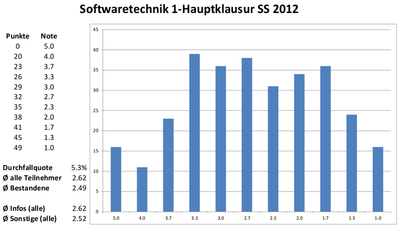

Für die Klausur in Softwaretechnik I 2012 bei Herrn Prof. Dr. Tichy sollte man Folgendes auf jeden Fall wissen:
- Wie lautet der Aufbau des Wasserfallmodells?
- Was ist ein Sequenzdiagramm und wie sieht es aus? → Antwort
- Wozu dient ein Aktivitätsdiagramm und wie sieht es aus? → Antwort
- Wozu dienen die 21 Entwurfsmuster? → Siehe mein Spiel und weiteres Spiel
- Wie sehen die Strukturmuster der 21 Entwurfmuster aus? → Siehe Kapitel 3.5
- Was wird zuerst erstellt: Das Lastenheft oder das Pflichtenheft? → Antwort
- Welche zwei Möglichkeiten gibt es in Java, um eine Aufgabe parallel auszuführen? Was sind die Vor- und Nachteile? → Antwort
- Wie nennt man die Schlüsselwörter der Art
@Test,@Beforeund@BeforeClass? Was bewirken diese Schlüsselwörter in JUnit? → Antwort - Wozu dient JFrame? → Antwort
Hinweise
- In den 60 Minuten Bearbeitungszeit haben Sie keine Zeit zum "Probemalen" oder "in Schönschrift nochmal abschreiben" vom Schmierblatt. Wenn es irgendwie geht, schreiben Sie Ihre Lösung gleich in lesbarer (!) Reinschrift.
- Die Farben rot und grün dürfen Sie nicht verwenden.
- Was mit Bleistift geschrieben oder nicht entzifferbar ist, werten wir nicht.
- Es sind keine Hilfsmittel erlaubt.
- Sie brauchen kein Papier mitzubringen.
Aus dem Mailman-Verteiler von Herrn Karcher.
Termine
Datum: Montag, den 06.08.2012 um 14:00 Uhr
Ort:
A - E: HSaF (Geb. 50.35)
F - K: Gerthsen (Geb. 30.21)
L - Q: Benz (Geb. 10.21)
R–S: Gaede (Geb. 30.22)
T–Z: Daimler (Geb. 10.21)
Dauer: 60 min.
Punkte: 60
Übungsschein: Noch nicht im Studierendenportal (Stand: 02.08.2012)
Bonuspunkte: Gibt es nicht, oder?
Sitzplatzverteilung: ?
Nicht vergessen
- Studentenausweis
- Kugelschreiber
Klausurergebnisse

{kind=link}
Klausurergebnisse für SWT I
Klausureinsicht: Montag, den 13.08.2012 von 14:00 bis 16:00 Uhr, SR 348, Infobau